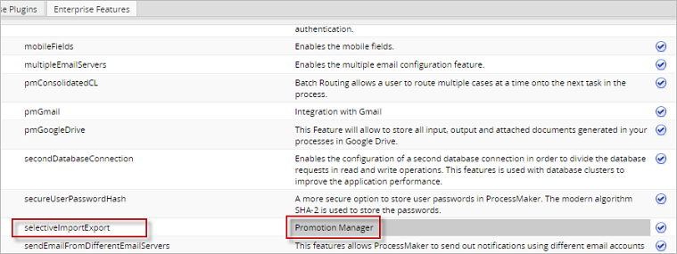
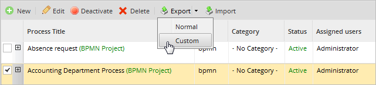
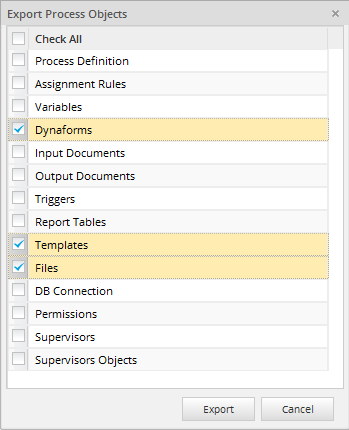
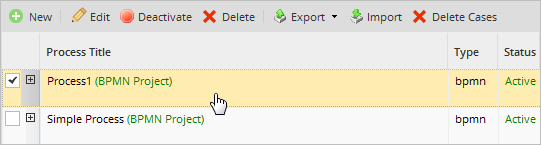
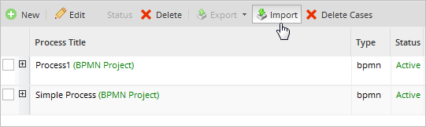
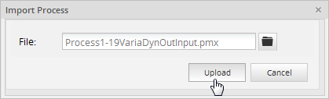
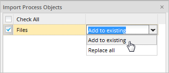
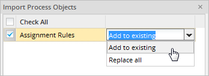
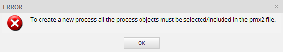
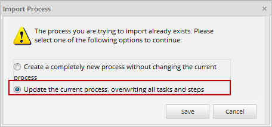

- Overview
- Requirements
- How the Feature Works
- Selection of Process Objects to Export
- Importing Process Objects
- Importing Process Objects to a New Process
- Importing Process Objects to an Existing Process
- Examples of Importation
- Promotion Manager Import Dialog
- Considerations When Importing Process Objects
Overview
Available Version: 3.0.1.8 on.
The Promotion Manager is a feature available in ProcessMaker Enterprise Edition 3.0.1.8 and on. This feature allows users to export and import certain process objects between environments in ProcessMaker. For example, from one installation of ProcessMaker to another, or between a development environment (where all the processes are tested and created) and a production environment.
Requirements
The following requirements are needed to work with this feature.
- ProcessMaker Enterprise Edition 3.0.1.8 or higher.
Licensing
To make sure that the license installed in ProcessMaker includes the Promotion Manager feature, go to Admin > Plugins > Enterprise Manager and select the Enterprise Features tab.

How the Feature Works
Users can select which process objects will be imported or exported. Process objects include: the process definition, Assignment Rules, Variables, Dynaforms, Input Documents, Output Documents, Triggers, Report Tables, Templates, Files, DB Connection, Permissions, Supervisors and Supervisor Objects.
However, user accounts and roles are not included. It is also possible to export all the process objects and the process diagram as a whole. For more information, please visit the Importing and Exporting Projects page.
Selection of Process Objects to Export
Use the Promotion Manager feature to export process objects by following the next steps:
- Go to the DESIGNER tab and select the process to export. After selecting it, the Export button will be enabled in the toolbar. Click on it and a menu with two options will be displayed. Select the Custom option to export the objects from a specific process.

- The Export Process Objects dialog will be displayed where the process objects that will be exported can be selected. Once the process objects are selected, click on the Export button. A .pmx2 file will be created containing the selected objects. Take into consideration that the .pmx2 file must include all the process objects to create a new process.

- The .pmx2 file will start to download automatically.

- A process can also be exported by right-clicking the process and selecting Custom under the Export option, as seen in the image below.

Exporting Process Objects from the Process Map
Process objects can also be exported from the Process Map by following the steps below:
- Open a process in the process map by double-clicking on it. A project can also be opened by clicking on the Edit option.

- Once the Process Map is opened, select the Export Process option in the top toolbar and click on the Custom option.

- The Export Process Objects dialog will be displayed where the process objects that will be included in the .pmx2 file will be selected.

The download of the .pmx2 file will start automatically. Save the file by following the browser's instructions.
The exported .pmx2 file can then be imported to another ProcessMaker installation/workspace.
Importing Process Objects
Import the .pmx2 file by following the next steps:
- Go to the Designer tab and select the Import button.

- A new window within the designer will open where the .pmx2 file to be uploaded must be selected. Click on the file icon to open the file navigator.

- Select the .pmx2 file to be imported. Usually, the file can be found in the Downloads folder, unless the browser is configured to store files in a different folder.
Once the file is selected, click on Open. - The name of the file will be shown in the Import Process window, but it is not been imported yet. Click on the Upload button to start selecting process objects in the next window.

- Add to existing (merge): For this option, process objects will be compared and merged with the existing ones. New objects will be created and the existing ones will not be replaced.

- Replace all: This option completely overwrites the existing process objects with the imported ones and creates new objects.

- Process Definition
- Assignment Rules
- Variables
- Dynaforms
- Input Documents
- Output Documents
- Triggers
- Report Tables
- Templates
- Files
- DB Connections
- Permissions
- Supervisors
- Supervisor Objects
- If tasks, task assignment rules or tasks types are removed or edited, then cases of that particular task will be unreachable.
- If the task title is changed, this change will only be reflected in new cases.
- Replace all: The existing assignment rules configuration will be replaced by the imported configuration. All the current assigned users and groups will be removed and the imported groups will be inserted. Note that users are not exported, only groups will be created or assigned.

.pmx2 File Configuration Target Configuration: After migration: task1: - Assigned groups: Group1
- Assignment type: Self service
- assigned groups: Group2
- Assignment type: Manual
task1: - Assigned groups: Group3
- Assignment type: Cyclical
- assigned groups: Group4
- Assignment type: Self service by value
task1: - assigned groups: Group1
- Assignment type: Self service
- assigned groups: Group2
- Assignment type: Manual
- Add to existing (merge): The current assignment rules configuration is maintained. The new imported groups will be added to the configuration, assigned users and groups will be maintained. Note that assignment types cannot be merged, so the current assignment type is maintained.

.pmx2 File Configuration Target Configuration: After migration: task1: - Assigned groups: Group1
- Assignment type: Self service
- assigned groups: Group2
- Assignment type: Manual
task1: - Assigned groups: Group3
- Assignment type: Cyclical
- assigned groups: Group4
- Assignment type: Self service by value
task1: - assigned groups: Group1, Group3
- Assignment type: Cyclical
- assigned groups: Group2, Group4
- Assignment type: Self service by value
One of the following options is displayed depending on if the process exists in the target workspace or not.
Importing Process Objects to a New Process
If the process that is being imported does not exist in the current workspace, a brand new process can be created if the .pmx2 file includes all the process objects.
Only .pmx2 files that include all the process objects can be used to create a new process. In this case, the Promotion Manager Import Dialog will not be displayed.
A completely new process will be created with different UIDs for all the process objects. The name of the new process will have the format "Copy of - Process_Name - Date, Time".

If the exported .pmx2 file does not include all of the process objects, then the process cannot be created and the following message will be displayed:

The option to create a completely new process is also available when the process already exists. Select the "Create a completely new process without changing the current process" option in the window that is displayed after importing the .pmx2 file.

Warning: ProcessMaker does NOT create new report tables if the report tables contained in the .pmx2 file already exist in the workspace. Therefore, if the user imports a .pmx2 file to create a copy of an existing process that includes existing report tables, an error message will be displayed since report tables can only be associated to one specific process. This is a known issue that will be fixed in upcoming versions of ProcessMaker.
Importing Process Objects to an Existing Process
If a process with the same UID in the current workspace already exists, the following window will appear:

To update the current process, select the "Update the current process, overwriting all tasks and steps" option and the Import Process Objects dialog will be displayed where the process objects that will be imported can be selected. This option detects whether the selected file format supports selective import or not. If selective import is supported by the .pmx2 file, then the following dialog is displayed where users can select which of the process objects contained in the .pmx2 file will be imported:

Except for the process definition object, each one of these objects has the following importation options:
Examples of Importation
The following table describes how the process objects are replaced or added to the target process. The process objects are represented as letters: A, B, C, D, E, F, G, H. The letters represent any and all process objects.
The following table describes the status of the process objects using the Replace All option:
| Original Process(.pmx2 file) | Target Process | Process after changes | Description |
|---|---|---|---|
| A | A | New process objects are created in the target process. | |
| A' | A | A' | An existing process object is replaced with the new version of the object. |
| C, D' | D | C, D' | A combination of the previous rules. A new object is created and the existing one is replaced. |
| F', G | F, H | F', G, H | A combination of the previous rules. Note that existing objects in the target process that are not imported are not modified. |
The following table describes the status of the process objects using the Add to existing option:
| Original Process(.pmx2 file) | Target Process | Process after changes | Description |
|---|---|---|---|
| A | A | New process objects are created in the target process. | |
| A' | A | A | Existing objects are not replaced in the target process. |
| C, D' | D | C, D | A combination of the previous rules. New objects are created and existing ones are not replaced. |
| F', G | F, H | F, G, H | Existing objects in the target process are not modified. |
Promotion Manager Import Dialog
This dialog is used to select the objects that will be imported to the process. The following process objects can be imported:
Elements not listed here will not be included. For instance, assigned users cannot be exported, and PM tables use their own interface to be imported and exported, so PM tables and assigned users are not included in this option.
The process objects are the lowest unit of configuration, therefore they are imported as units. The list of objects is the suggested order of import. The last imported object refers to the previously imported object.
Considerations When Importing Process Objects
Importing a Process Definition
When importing a process definition, "Replace all" is the only option available by default. The process definition replaces all the content in the diagram below with imported content.
A process definition includes the following items:
| BPMN elements: | Task properties: |
|---|---|
| Tasks | Tasks Configurations |
| Gateways | Task steps |
| Start events | Subprocess |
| Intermediate events | Start event properties |
| End events | Web entries |
| Flows | |
| Annotations | |
| Groups | |
| Data objects |
Process Definition Dependencies
Take notice that process definitions include references to other process objects. For this reason, it is recommended to import them at the end, after all possible related objects are imported.
Consider the following relationships between process definitions and other process objects:
| Dependencies |
|---|
| Task → Groups → Assignment Rules |
| Step Trigger → Triggers |
| Case Tracker → Dynaform |
| Web Entry → Dynaform |
| Web Entry Event → Dynaform |
| Message Type → Variable |
| Message Type Definition → Templates |
| Email Event → Templates |
| ABE → Templates and Dynaform |
| Script task → Triggers |
| All task → Steps |
| Steps → Dynaform |
| Steps → Input docs |
| Steps → Output docs |
| Steps → Triggers |
For example: if the process definition includes a step where an input document is assigned, then the input document should be imported first.
Recommendations for Process Definitions
Take the following cases into consideration:
If a process definition refers to an non-existing process object, the reference will be removed. For example: if a non-existing Dynaform is referenced inside the configuration for steps in a task, this reference will be removed from the configuration.
Additionally, if there are cases currently running and the process diagram is replaced, the following points should be considered:
Importing Assignment Rules
The assignment rules can be imported in the following ways:
Groups in tasks are compared based on their group names. If a group is referenced in the assignment rules of a task and is imported as a new group, this new group will be created without users in the current workspace. Keep in mind that the change of the assignment type of a task can cause existing cases not to be found.
Assignment Rules Dependencies
The Assignment Rules object can include the following dependencies depending on its type:
| Dynaform Dependencies |
|---|
| Assignment Rules → Groups |
| Assignment Rules → Users |
| Assignment Rules → Triggers |
Importing Dynaforms
Dynaforms are compared with imported ones based on their titles.
Dynaform Dependencies
Dynaform objects can include the following dependencies with other process objects:
| Dynaform Dependencies |
|---|
| Dynaforms → Variables |
| Dynaforms → Variables → Input Documents |
For example: if the Dynaform includes references to variables, these variables should be selected in the imported process or imported before the Dynaform.
Importing Report Tables
Existing report tables are compared with the report tables contained in the .pmx2 file that will be imported using their table names. The definition and data of each report table will be included in the importation process.
Warning: ProcessMaker does NOT create new report tables if the report tables contained in the .pmx2 file already exist in the workspace. Therefore, if the user imports a .pmx2 file to create a copy of an existing process that includes existing report tables, an error message will be displayed since report tables can only be associated to one specific process. This is a known issue that will be fixed in upcoming versions of ProcessMaker.
Importing DB Connections
When importing DB Connections, the existing DB connections will be compared with the imported ones using their DB connection titles. When using external databases, if the server does not have the required libraries to support the external connections imported, then the DB connections will not work until the required libraries are installed.
Importing Permissions
When importing Permissions, the existing permissions will be compared with the imported ones using their names. For this, the permission name property must be created. If a group is used inside a permission and the group does not exist in the target workspace, it will be created as a new empty group (without users).
Importing Supervisors
When importing Supervisors, the existing supervisors will be compared with the imported supervisors using their names. If a group is selected as supervisor and it does not exist in the target workspace, it will be imported as a new empty group (without users).
Importing Supervisor Objects
Supervisor Objects are references to Dynaforms, Input Documents and Output Documents. The supervisor can only manage the referenced objects. The existing supervisor objects are compared with the imported ones using their names.
Importing Groups
Groups are not imported directly. Take notice that this functionality only imports groups that are referenced in the imported process objects. If the group referenced does not exist, a new group will be created. In any case, users belonging to these groups are not imported. Therefore, users should be created or assigned to the groups in the target workspace after the importing process is over.